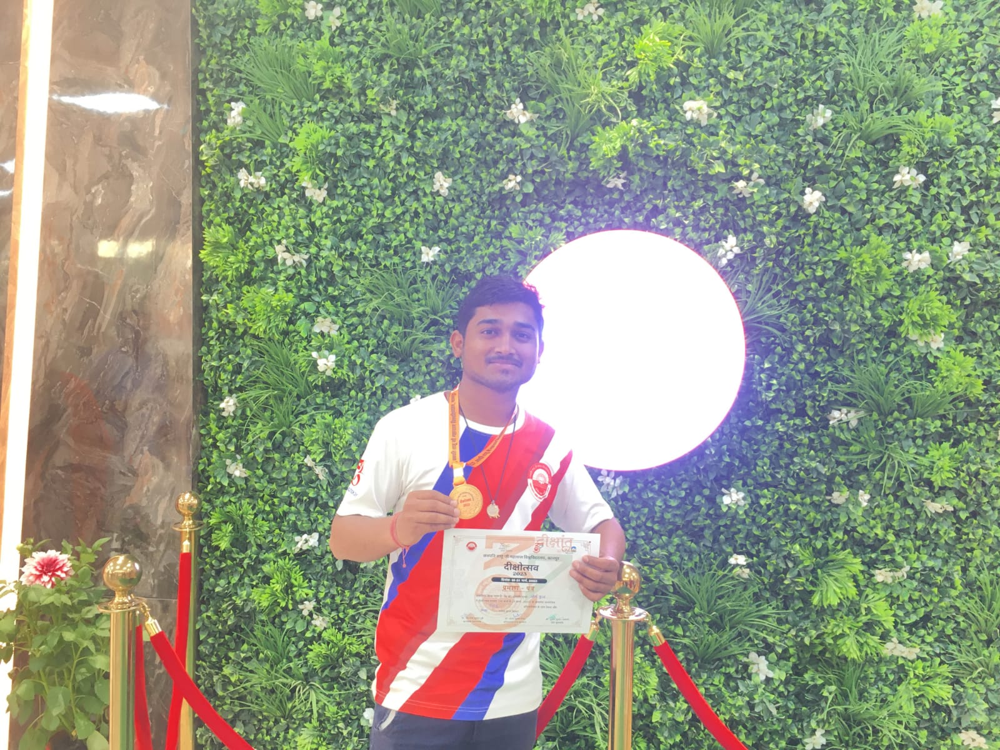
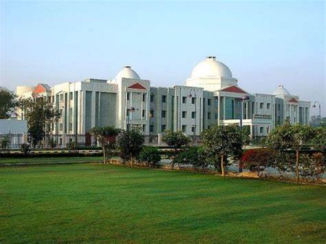

37TH CONVOCATION CEREMONY DAY OF CHATRAPATI SHAHU JI MAHARAJ UNIVERSITY KANPUR[CSJMU]
HONOURABLE PRIME MINISTER OF INDIA SHRI NARENDRA DAMODAR DAS MODI
CHATRAPATI SHAHU JI MAHARAJ UNIVERSITY KANPUR
HONOURABLE GOVERNOR OF UTTAR PRADESH SHRIMATI AANANDIBEN PATEL
VICE-CHANCELLOR OF CSJM UNIVERSITY VINAY KUMAR PATHAK
MINISTER FOR HIGHER EDUCATION INFORMATION AND ELECTRONICS MANAGEMENT OF UP YOGENDRA UPADHYAY
CHIEF GUEST AND THE SPIRITUAL LEADER SWAMI CHIDANAND SARASWATI MAHARAJ
MINISTER OF STATE FOR HIGHER EDUCATION RAJNI TIWARI

37TH CONVOCATION CEREMONY DAY OF CHATRAPATI SHAHU JI MAHARAJ UNIVERSITY KANPUR[CSJMU]
GEEK WEEK
AWARDEES AND MEDALISTS
37TH CONVOCATION CEREMONY DAY OF CSJM UNIVERSITY


.jpeg)

OUR CSJM UNIVERSITY WELCOMES HONORABLE AND RESPECTED DIGNITARIES OF INDIA AND UTTAR PRADESH IN THE 37TH CONVOCATION CEREMONY OF CSJM UNIVERSITY
HONOURABLE GOVERNOR OF UTTAR PRADESH AANANDIBEN PATEL
MINISTER FOR HIGHER EDUCATION INFORMATION AND ELECTRONICS MANAGEMENT OF UP YOGENDRA UPADHYAY
MINISTER OF STATE FOR HIGHER EDUCATION RAJNI TIWARI
CHIEF GUEST AND THE SPIRITUAL LEADER SWAMI CHIDANAND SARASWATI MAHARAJ
VICE-CHANCELLOR OF CSJM UNIVERSITY PROF. VINAY KUMAR PATHAK
PRO-VICE CHANCELLOR OF CSJM UNIVERSITY SUDHIR KUMAR AWASTHI
REGISTRAR ANIL KUMAR YADAV
FORMER MLA SURENDRA BAHADUR
AYURVEDA AND YOGA ACHARYA RESPECTED VANDANA PATHAK
AATMODAY HOBBY CLUB GEEK-WEEK ORGANISER IN 37TH DEEKSHANTH SAMAROH DR. MAMTA TIWARI
AND ALL OTHER CHEIF GUESTS , PROFESSORS OF CSJM UNIVERSITY , FACULLTIES , TEACHERS , PHD DEGREE AWARDEES , AAGANWAADI WORKERS , AND ALL UP AND INDIAN CITIZENS.
THESE WORDS ARE DEDICATED TO ALL THE DIGNATRIES MENTIONED OF WHAT I HAVE EXPERIENCED AT THE 37TH CONVOCATION CEREMONY IN CHATRAPATI SHAHU JI MAHARAJ UNIVERSITY KANPUR
THIS SIDE STUDENT OF CHATRAPATI SHAHU JI MAHARAJ UNIVERSITY[CSJMU] - OM GUPTA STUDENT OF B.SC. BIOTECHNOLO0GY HONOURS 2ND YEAR
OUR WONDERFUL CHATRAPATI SHAHU JI MAHARAJ UNIVERSITY CONDUCTED 37TH CONVOCATION CEREMONY IN WHICH ALL DIGNATRIES CAME MENTIONED ABOVE.
WE HAD WELCOMED HONOURABLE GOVERNOR OF UTTAR PRADESH AANANDIBEN PATEL AND HAD DONE INAUGRATION OF AMRIT SAROVAR , SEVA UDHYAN PARK WHICH SEEMS TO BE VERY PREETY FILLED
CHERRY BLOSSOMS , AND NEWLY CONSTRUCTED VEERANGANA RANI LAKSHMIBAI AUDITORIUM IN CHATRAPATI SHAHU JI MAHARAJ UNIVERSITY KANPUR.
THE MANAGEMENT FOR THE INAUGRATIONS OF THESE THREE DIFFERENT PLACES HAD STARTED AROUND 9AM AND HONOURABLE GOVERNOR OF UTTAR PRADESH AANANDIBEN PATEL HAD STARTED INAUGRATIONS OF AMRIT SAROVAR , SEVA UDHYAN PARK WHICH SEEMS TO BE VERY PREETY FILLED
CHERRY BLOSSOMS , AND NEWLY CONSTRUCTED VEERANGANA RANI LAKSHMIBAI AUDITORIUM IN CHATRAPATI SHAHU JI MAHARAJ UNIVERSITY KANPUR.
AFTER INAUGRATIONS OF AMRIT SAROVAR , SEVA UDHYAN PARK WHICH SEEMS TO BE VERY PREETY FILLED
CHERRY BLOSSOMS , AND NEWLY CONSTRUCTED VEERANGANA RANI LAKSHMIBAI AUDITORIUM IN CHATRAPATI SHAHU JI MAHARAJ UNIVERSITY KANPUR.
ALL THE DIGNATRIES ARE BEAUTIIFALLY WELCOMED IN THE VEERANGANA RANI LAKSHMIBAI AUDITORIUM OF CHATRAPATI SHAHU JI MAHARAJ UNIVERSITY KANPUR.
37TH CONVOCATION CEREMONY OF CSJM UNIVERSITY HAS STARTED IN THE VEERANGANA RANI LAKSHMIBAI AUDITORIUM OF CHATRAPATI SHAHU JI MAHARAJ UNIVERSITY KANPUR.
VICE-CHANCELLOR OF CSJM UNIVERSITY PROF. VINAY KUMAR PATHAK AND HONOURABLE GOVERNOR OF UTTAR PRADESH AANANDIBEN PATEL HAD ANNOUNCED OPENING CEREMONY OF 37TH CONVOCATION CEREMONY OF CSJM UNIVERSITY
THE OPENING CEREMONY HAD DONE AT 11 AM AND NOW DEEKSHANTH SAMAROH PROGRAM BEGINS WITH THE BEAUTIFUL GANESH VANDANA AND ACHARYA OF CSJMU HAD CONCH SHELL BLOWN.
NOW THE 37TH DEEKSHANTH PROGRAM BEGINS WITH BEAUTIFUL AND WONDERFUL SPEECH BY VICE-CHANCELLOR OF CSJM UNIVERSITY PROF. VINAY KUMAR PATHAK
IN WHICH SIR HAS DISCUSSED ABOUT THE GREATFUL WORKS DONE BY CSJMU FOR THE BENEFIT OF STUDENTS, PROFESSORS AND OUR COUNTRY INDIA AND HOW OUR NATION WILL REMAIN ON TOP IN TERMS OF ECONOMY , ENVIRONMENT AWARENESS AND MANY MORE
UNCOUNTABLE BENEFITS.
AFTER THAT MINISTER FOR HIGHER EDUCATION OF UP YOGENDRA UPADHYAY GAVE HIS MAGNIFICIENT AND GLORIOUS SPEECH IN VEERANGANA RANI LAKSHMIBAI AUDITORIUM IN WHICH HE COCLUDED ABOUT FUTURE BENEFICIARY PROGRAMS OF UTTAR PRADESH
AND INDIA AND THEY ARE THAMKFUL TO PRIME MINISTER NARENDRA DAMODAR DAS MODI FOR MAKING OUR LOVELY COUNTRY INDIA IN TOP IN ALL FORMATS AND
TERMS AS ECONOMY , NUCLEAR POWER OF INDIA , HE ALSO CONCLUDED THAT WHEN HE WENT FRANCE THERE PEOPLE ASKED HIM FROM WHERE YOU ARE SO SIR SAID FROM INDIA SO THE FRENCH REPLIED FROM MODI'S COUNTRY AND THAT MAKES THEM AND OUR ALL PROUD FOR OUR INDIA, OUR PRIME MINISTER OF INDIA
SHRI NARENDRA MODI AND NOT ONLY FOR US THIS IS BEAUTIFUL LOVABLE COUNTRY INDIA BUT ALSO IN ALL OTHER COUNTRIES.
AFTER THAT CHIEF GUEST AND THE SPIRITUAL LEADER SWAMI CHIDANAND SARASWATI MAHARAJ JI GAVE HIS MARVELLOUS AND LOVELY SPEECH IN VEERANGANA RANI LAKSHMIBAI AUDITORIUM CSJM UNIVERSITY IN WHICH HE CONCLUDED ABOUT SPIRITUALITY TALKS AND WONDERFUL WORKS DONE BY
HONOURABLE GOVERNOR OF UTTAR PRADESH AANANDIBEN PATEL AND VICE-CHANCELLOR OF CSJM UNIVERSITY PROF. VINAY KUMAR PATHAK AND FOR THE PAST AND FUTURE BENEFITS OF VARIOUS SCHEMES AND SAID THAT PLANT MAXIMUM TREES BEACUSE IF TREES ALIVE THEN WE PEOPLE ALIVE.
THEN MINISTER OF STATE FOR HIGHER EDUCATION RAJNI TIWARI GAVE HER SUBLIME SPEECH ABOUT AWARDS GIVEN TO PHD HOLDERS AND ALL OTHERS
NOW HONOURABLE GOVERNOR OF UTTAR PRADESH AANANDIBEN PATEL GAVE HER AMAZING , SURPRISING , MAGNIFICIENT , MOST BEAUTIFUL SPEECH IN
VEERANGANA RANI LAKSHMIBAI AUDITORIUM OF CHATRAPATI SHAHU JI MAHARAJ UNIVERSITY KANPUR.
HONOURABLE GOVERNOR OF UTTAR PRADESH AANANDIBEN PATEL CONCLUDED ABOUT THE BENEFITS OF THE GREAT WORKS DONE BY CSJM UNIVERSITY AND GIRLS ARE GETTING MEDALS
COMPARED TO BOYS IN THE RATIO OF 80:20 IN INDIA AND SAID THAT BOYS HAD TO WORK HARD FOR BENEFIT OF INDIA AND ALL.
MAM ALSO FOCUSED ON WORKS DONRE BY CSJMU DONE AS INAUGRATION OF AMRIT SAROVAR IN WHICH BIOREMEDIATION PLANTS HAVE BEEN PLANTED AND A INDIAN NAMED WALL IS ALSO BEEN CONSTRUCTING , SEVA UDHYAN PARK WHICH SEEMS
TO BE VERY PREETY FILLED
CHERRY BLOSSOMS IN WHICH GOURIYA HOUSES HAD BEEN MADE BY CSJM STUDENTS ,2,27,936 DEGREES HAVE BEEN UPLOADED TO DIGILOCKER PORTAL , GYAN SANCHAY WEBSITE OF CSJMU,
,NATIONAL SERVICE SCHEME [NSS] 75 VILLAGES ADOPTION BY CSJM UNIVERSITY UNDER 75TH AZADI KA AMRIT MAHOTSAV SCHEME OF PM MODI ,AND IT IS BENEFICIAL FOR THE BIRDS ULTIMATELY THE ENVIRONMENT AND GREENERY IN INDIA,
AND NEWLY CONSTRUCTED VEERANGANA RANI LAKSHMIBAI AUDITORIUM IN CHATRAPATI SHAHU JI MAHARAJ UNIVERSITY KANPUR.
AFTER THAT AWARDS , MEDALS AND DEGREES ARE BEEN AWARDED TO PHD HOLDERS ,
GRADUATED STUDENTS OF CSJMU AND 37TH DEEKSHANTH SAMAROH SPORTS MEDALISTS AND OTHER RESPECTED PEOPLES.

I AM ALSO A GOLD-MEDALIST IN PITTU GAME FINAL AT 37TH DEEKSHANTH CEREMONY INTER-UNIVERSITY COMPETITION HAD ALSO WON A GOLD-MEDAL IN PITTU GAME FINAL
AT 37TH DEEKSHANTH CEREMONY INTER-UNIVERSITY COMPETITION AND RECEIVED BY PRO-VICE CHANCELLOR OF CSJM UNIVERSITY SUDHIR KUMAR AWASTHI
REGISTRAR ANIL KUMAR YADAV , DR. SNEH PANDEY , DR. MAMTA TIWARI , DR. ASHSIH DUBEY AND ALL OTHER PROFESSORS.
I AM ALSO BEEN A PART OF PRIME MINISTER NARENDRA MODI SCHEME EK BHARAT SHRESTHA BHARAT PROGRAM UNDER YUVA SANGAM IN WHICH I HAD MEET GOVERNOR
OF MEGHALAYA AND NODAL OFFICER OF EBSB .
THE PROGRAM 37TH CONVOCATION CEREMONY HAD BEEN CALLED CLOSED BY THE HONOURABLE GOVERNOR OF UTTAR PRADESH AANANDIBEN PATEL
AND
VICE-CHANCELLOR OF CSJM UNIVERSITY PROF. VINAY KUMAR PATHAK.
AFTER THEN WE HAD REFRESHMENTS IN THE VEERANGANA RANI LAKSHMIBAI AUDITORIUM AND PROGRAM IS BEAUTUFALLY CLOSED.
I AM REALLY THANKFUL TO
CHATRAPATI SHAHU JI MAHARAJ UNIVERSITY[CSJMU]
HONOURABLE GOVERNOR OF UTTAR PRADESH AANANDIBEN PATEL
MINISTER FOR HIGHER EDUCATION OF UP YOGENDRA UPADHYAY
MINISTER OF STATE FOR HIGHER EDUCATION RAJNI TIWARI
CHIEF GUEST AND THE SPIRITUAL LEADER SWAMI CHIDANAND SARASWATI MAHARAJ
VICE-CHANCELLOR OF CSJM UNIVERSITY PROF. VINAY KUMAR PATHAK
PRO-VICE CHANCELLOR OF CSJM UNIVERSITY SUDHIR KUMAR AWASTHI
REGISTRAR ANIL KUMAR YADAV
FORMER MLA SURENDRA BAHADUR
AYURVEDA AND YOGA ACHARYA RESPECTED VANDANA PATHAK
AND ALL OTHER CHEIF GUESTS , PROFESSORS OF CSJM UNIVERSITY , FACULLTIES , TEACHERS , PHD DEGREE AWARDEES , AAGANWAADI WORKERS AND UTTAR PRADESH
TO BE A PART OF THIS AMAZING AND WONDERFUL 37TH DEEKSHANTH CONVOCATION CEREMONY OF CHATRAPATI SHAHU JI MAHARAJ UNIVERSITY.
THANK YOU.
BY- OM GUPTA
B.SC. BIOTECHNOLOGY

CHATRAPATI SHAHU JI MAHARAJ UNIVERSITY KANPUR

CHATRAPATI SHAHU JI MAHARAJ UNIVERSITY KANPUR